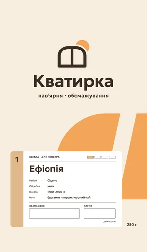
Ethiopia
Roast level 1, Light
Filter
Sidamo · washed · 1,900–2,100 m
bergamot · peach · black tea
420 ₴ · 250 g
Coffee shop & roastery
Morning coffee by the open window, roasted a few steps from the counter.
8 Sadova Street · Lypovyi Kut
Відчинено · Open today 7:30–20:00
Concept location
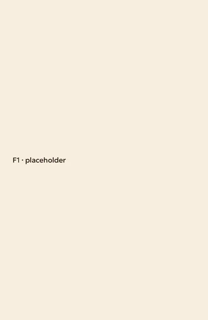
Visit
8 Sadova Street · Lypovyi Kut, Ukraine
Concept location
Landmark 1 — working text. Landmark 2 — working text (content stage).
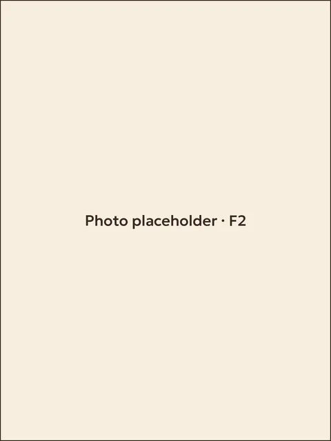
How to find us
Text alternative of the scheme (UX7): how the streets and the square relate to the café — working text, content stage.
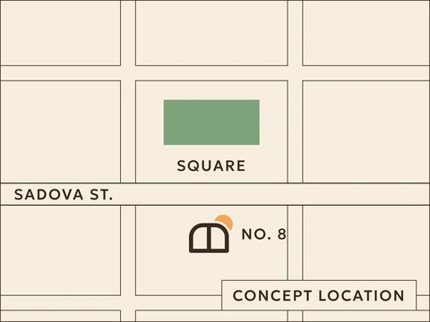
Story
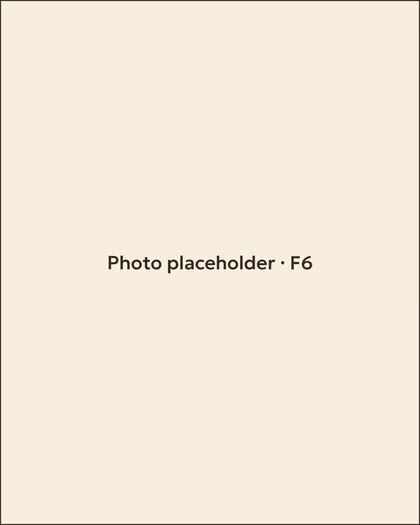
kva-TIR-ka
A small opening sash in a window, used to let fresh air in.
We open the doors at 7:30. The morning shift starts the machine, neighbours stop by on their way, and the first light comes in through the window.
Ordinary mornings, open windows, fresh air. That is what we keep.
Roastery
We roast our coffee in small batches — for our bar and for your kitchen.
Every pack carries its roast date, so you always know when your coffee was roasted.
Take our coffee home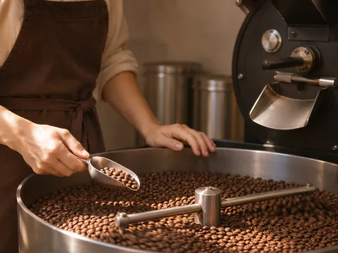
Beans
Six coffees we roast for our bar and for your kitchen. 250 g packs — whole beans, or ground for the way you brew.
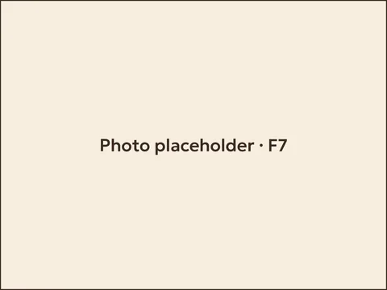

Roast level 1, Light
Filter
Sidamo · washed · 1,900–2,100 m
bergamot · peach · black tea
420 ₴ · 250 g
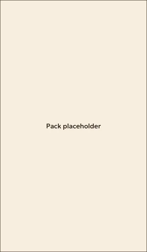
Roast level 1, Light
Filter
Nyeri · washed · 1,700–1,900 m
blackcurrant · grapefruit · cane sugar
460 ₴ · 250 g
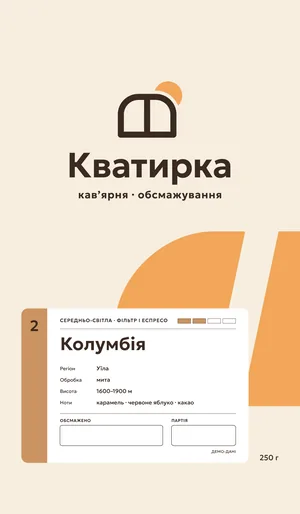
Roast level 2, Medium-light
Filter & espresso
Huila · washed · 1,600–1,900 m
caramel · red apple · cocoa
390 ₴ · 250 g
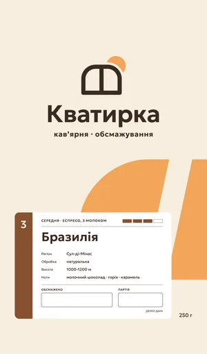
Roast level 3, Medium
Espresso, with milk
Sul de Minas · natural · 1,000–1,200 m
milk chocolate · nuts · caramel
340 ₴ · 250 g
Roast level 3, Medium
Espresso, with milk
Brazil · Colombia · natural · washed · 1,000–1,900 m
chocolate · hazelnut · caramel
320 ₴ · 250 g
Roast level 4, Dark
Espresso, cezve
Sumatra, Aceh · wet-hulled · 1,300–1,600 m
dark chocolate · cedar · spice
380 ₴ · 250 g
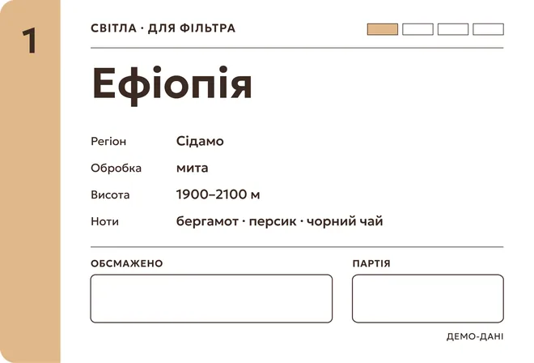
Roast level
Level 1 · Light. Best for filter.
Origin
Sidamo — the region where it grew.
Process
Washed.
Altitude
1,900–2,100 m above sea level.
Tasting notes
Bergamot · peach · black tea.
Roasted on
The date this coffee was roasted.
Batch
The roast batch number.
Loyalty
The tenth one’s on us.
Demo terms
Plan your visit